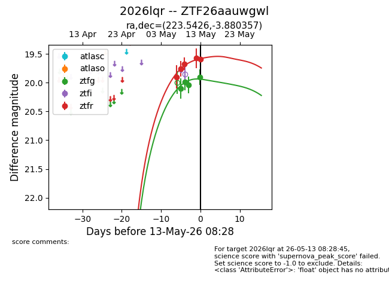
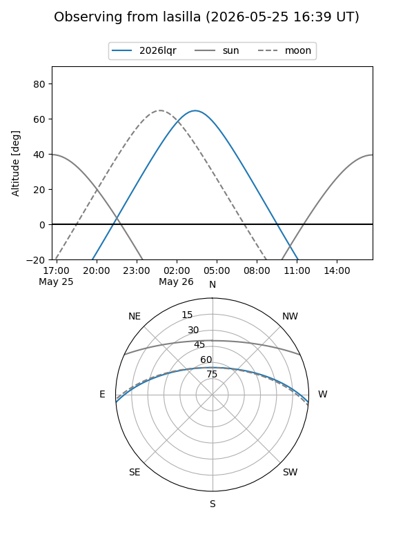
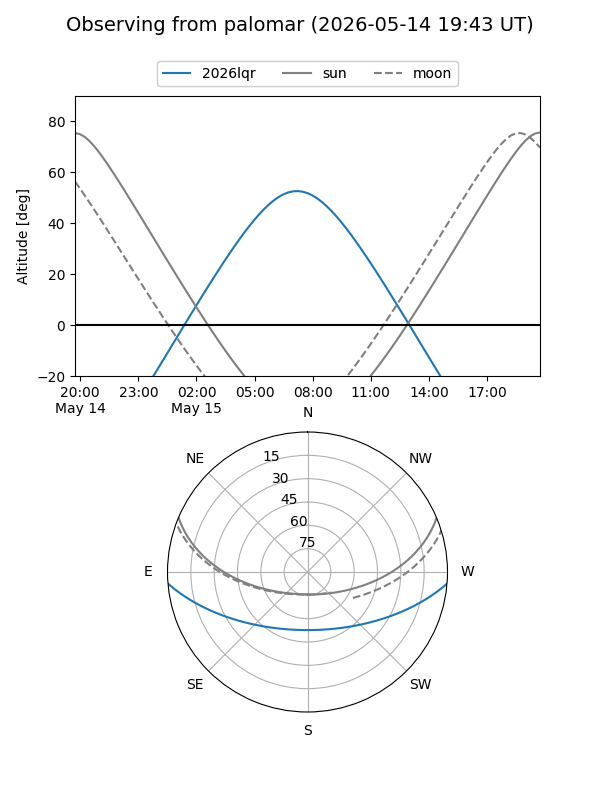
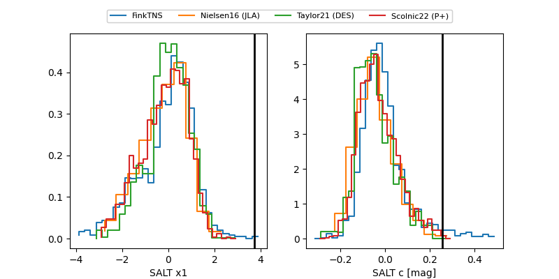

2026lqr
Target 2026lqr at 2026-05-13 08:30
Aliases and brokers:
FINK: link
Lasair: link
ALeRCE: link
TNS: link
YSE: link
alt names
ZTF26aauwgwl (ztf,fink_ztf)
2026lqr (tns,yse)
Coordinates:
equatorial (ra, dec) = 223.5426,-3.88036
equatorial (HMS+DMS) = 14:54:10.23,-03:52:49.29
galactic (l, b) = (351.3660,+47.11992)
Flags:
Photometry:
last ztfg=19.91, ztfr=19.60
4 ztfg, 5 ztfr detections
Lightcurve

Visibility


Additional plots
